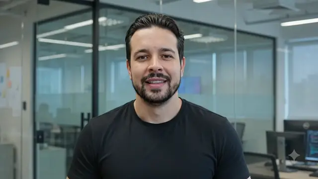
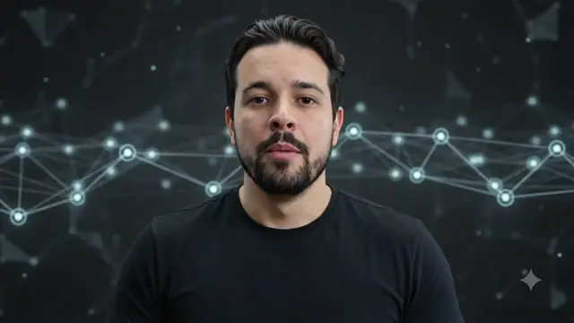
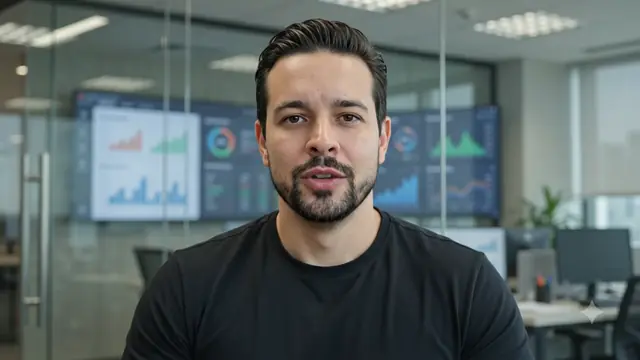
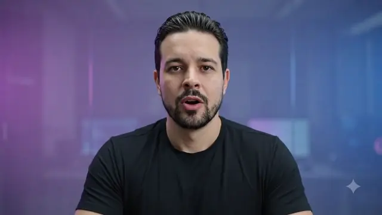

Liderança Técnica & Governança
Atuação na Capemisa Seguradora liderando equipes multidisciplinares no desenvolvimento de sistemas corporativos críticos. Foco em arquitetura resiliente, padrões de design (SOA/WCF) e governança técnica.
SYS_ONLINE: AI_AGENT_v2.6
Leonardo de Oliveira · AI & Solutions Architect
Sou Leonardo de Oliveira, engenheiro de software focado em plataformas, arquitetura e segurança — acelerando o ciclo de desenvolvimento com AI-DLC sob human oversight. Não uma fábrica 100% autônoma, mas inteligência que amplifica pessoas, mantendo a conexão humana e a decisão sempre no centro.
Linha do tempo
Atuação na Capemisa Seguradora liderando equipes multidisciplinares no desenvolvimento de sistemas corporativos críticos. Foco em arquitetura resiliente, padrões de design (SOA/WCF) e governança técnica.
Como um dos fundadores da Tatios Soluções em Informática, liderei a concepção, arquitetura e entrega de softwares sob medida para diversos nichos, focando na resolução de problemas complexos de engenharia.
Engenharia de Soluções na CWI Software atendendo a grandes contas. Cases: liderança da migração para Microfrontends com Angular no Banco ABC, automação de faturamento no CIEE (Spring/React) e reescrita do app Ouze (Flutter).
Liderança técnica em arquitetura corporativa e engenharia de IA na CWI. Mentoria de Staffs, evangelização de ADRs, criação de visões de referência e desenvolvimento baseado em Spec-Driven Development e agentes de IA sob human oversight.
Projetos

Condução da iniciativa de adoção do AI Development Life Cycle na CWI, estruturando agentes de IA sob human oversight, spec-driven development e ciclos de entrega que aceleram o time sem tirar a decisão das pessoas.

Liderança técnica na transição da plataforma corporativa de Internet Banking para uma arquitetura baseada em Microfrontends com Angular, promovendo alta autonomia entre equipes e baixo acoplamento.

Projeto e desenvolvimento de uma solução de faturamento e conciliação financeira de alta resiliência, elevando substancialmente a eficiência operacional e automatizando fluxos bancários complexos.

Reengenharia e reescrita de ponta a ponta do aplicativo móvel corporativo utilizando Flutter, resultando em uma experiência de alta performance, responsividade fluida e arquitetura modular.
Neural integration
Estou sempre aberto a discussões sobre AI-DLC, IA com human oversight e arquitetura de plataformas — sempre com pessoas no centro. Envie uma mensagem diretamente ao meu console neural.
SYSTEM: CONEXÃO INICIADA A PARTIR DE 127.0.0.1
SYSTEM: INSIRA OS PARÂMETROS PARA ENVIAR TRANSMISSÃO.